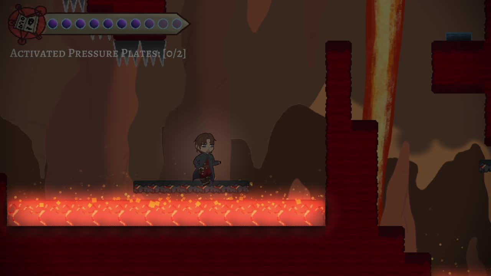
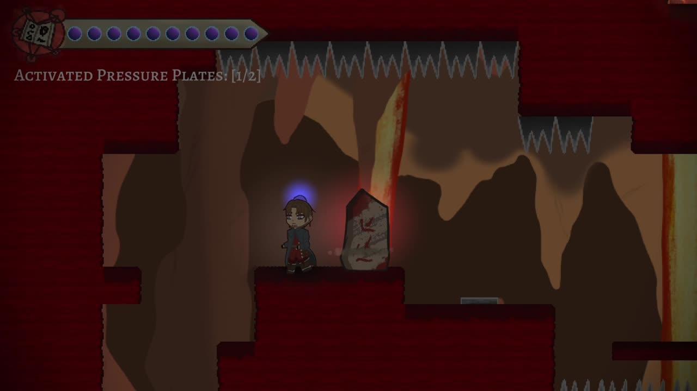
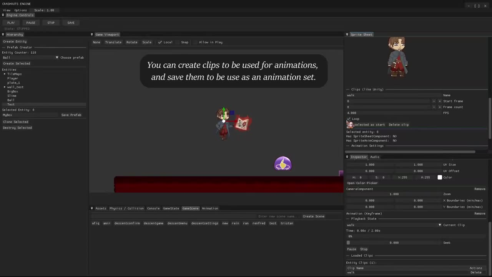
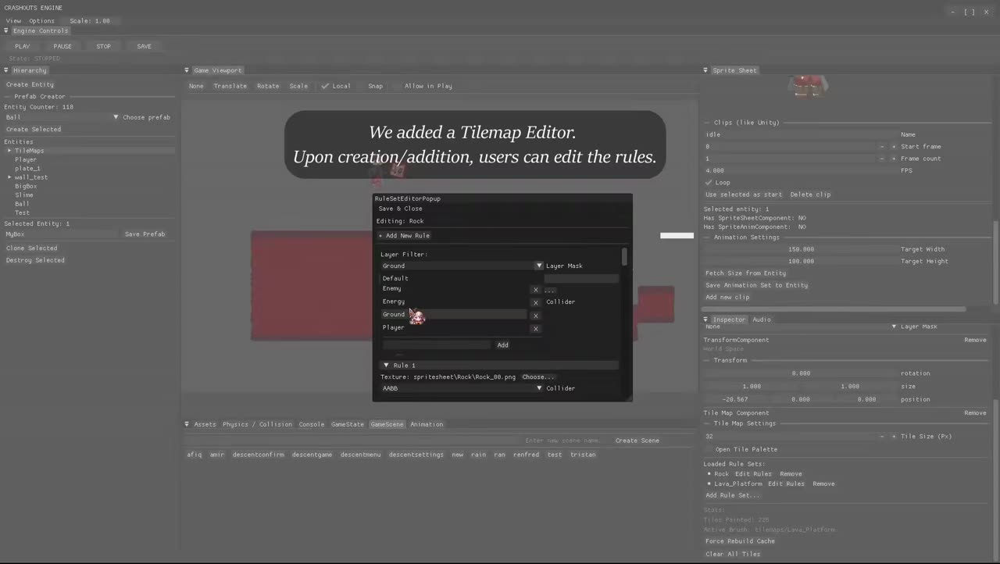

The problem
Our year-long team project had one big rule: no off-the-shelf engine. Before Descent could exist, we had to build the engine it runs on, along with tools good enough for designers and artists to make levels without touching C++.
Constraints
- One academic year (September to April), alongside every other module.
- 8 people across programming, design and art, all depending on the engine at the same time.
- Everything from scratch in C++ and OpenGL. No Unity, no Unreal.
- The game had to be finished and playable for course assessment.
What I built
An entity-component-system built on sparse and dense sets. Each component type lives in a tightly packed (dense) array, and a sparse array maps every entity ID straight to its slot. Looking up an entity's component is O(1), and systems walk through contiguous memory instead of chasing pointers, which keeps the CPU cache happy as entity counts grow.
Work on the renderer and editor. I contributed to the OpenGL 2D renderer, which draws each frame in layers with lighting on top, and helped build the ImGui editor tools the rest of the team used to make levels.


Technical direction. As engine lead I set the architecture and priorities across rendering, entity management and tooling, so a multidisciplinary team could work in parallel without blocking each other.
Tools for the whole team
An engine is only useful if the rest of the team can build with it. Together we shipped an in-engine editor with:
- A sprite sheet and animation clip editor, so artists can cut frames and save animation sets.
- A rule-based tilemap editor with layers and colliders for painting levels.
- C# scripting that calls into the C++ core, so gameplay can be written without recompiling the engine.
- A particle system with fire, fireball, explosion and trajectory presets.
- Play, pause, stop and save controls for editing scenes live, with scenes saved to JSON.


Result
Descent shipped as a complete 2D puzzle-platformer running entirely on our engine. It was submitted for course assessment and published on GitHub, and every level in it was built with the team's own editor.